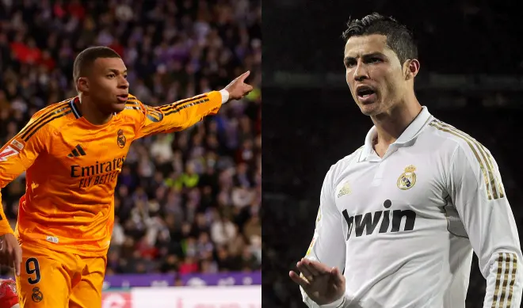

Kylian Mbappé va sin freno. El delantero del Real Madrid ha entrado en 2025 en plan Terminator. Ocho goles en ocho partidos han disparado sus cifras hasta los 22 goles en todas las competiciones. En todas y cada una de ellas ha marcado Mbappé, tanto a lo largo de la temporada como en las cuatro que ha jugado desde que cambió el año: Copa, Supercopa, Liga y Champions.
Sátira. Al más puro estilo de las Fallas de Valencia. Vinicus va a ser uno de los grandes protagonistas de la Exposición del Ninot que busca la mejor figura fallera para salvarse de las llamas el próximo 19 de marzo en Valencia. El artista Víctor Navarro, que planta la Falla de Denia- Brasil ha presentado un ninot de Vinicius en el que se mofa de su balón de oro frustrado y lo convierte en el 'cagalló d`or' lo que se viene a traducir como (moñiga de oro). En el ninot aparece el jugador con una camiseta, media del Real Madrid y media de Brasil y con un 'moñigo' en la mano de color dorado. En el texto que acompaña al ninot, que será el número 81 en la Exposición, se hace crítica a su comportamiento y hay 'palos' también para el MARCA y el AS. "Vinicius Junior está regando el jardín con sus lloros, el Madrid le quiere animar y le otorga el moñigo de oro. Son lágrimas de cocodrilo que le hará huir en barco, le hacen una defensa gentil , cómo no, el As y el MARCA", reza en valenciano el cartel que acompaña al ninot del brasileño.
El Valencia se encontró con su triste realidad en estadio Olímpico Lluís Companys de Montjuïc. Tras lograr un empate y una victoria para empezar su escalada en busca de la salvación, el Barcelona lo puso en su sitio. El Barcelona, con su victoria 7-1, igualó la peor goleada que haya recibido el Valencia nunca en la Liga. De hecho, el equipo blanquinegro en sus casi 106 años de historia ha recibido siete goles en un partido de Liga en cuatro ocasiones. La de este domingo en Montjuïc ante el Barcelona es la única ‘en color’. Porque para encontrar un precedente de magnitud similar hay que remontarse 70 años atrás. Curiosamente, en la misma temporada, la 1954-55 Alavés y Athletic le hicieron sendos 7-0. Antes, en la 1933-34 fue el Oviedo el que goleó 7-0 al conjunto valencianista.